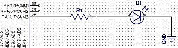
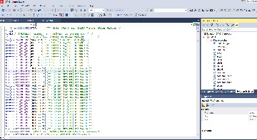

GPIO pins can be used to toggle LEDs, drive LCDs using a parallel interface, or detect inputs like button presses.
*Warning* If you're coming from AVR or Xmega then you should note that the current source and sink on each pin is a lot less on the ATSAM4S. Most GPIO can only source/sink 2ma, but there are a few that can do 4ma. Please check the ATSAM4S datasheet (page 1143) for minimums and maximums for voltage and current on pins. If you're going to directly drive something like an LED, just make sure that the GPIO pins can sink or source enough current to drive the part or else use a transistor.
There are no prerequisites for using basic GPIO functions like setting input/output and setting high/low. If you want to use fancier features like button debouncing and interrupts then you'll have to set the main clock. This will be covered in the interrupt section.
In the first example we will setup a 'hello world' program - How to blink an LED using GPIO.
To blink an LED we need to:
1. We will setup our LED on PA11
2. To calculate the appropriate current limiting resistor we will need to look at the datasheet of the LED as well as the ATSAM4S on page 1143 and then do a little bit of math. If you dont know the voltage drop of your LED you can always use a multimeter to get that value.
R = (vcc - LED forward voltage) / LED forward current R = (3.3 - 1.758) / 0.00075 R = 2056Ω
We will use a 2k resistor and the LED will only draw 0.75ma from the GPIO pin, which is under the maximum current source of 2ma on that pin. Please note that it's far better to drive an LED with a transistor controlled by a gpio rather than directly from a GPIO due to the current sink/source limit of the individual GPIO on the SAM4S.
3. Enable the PIO controller and disable the peripheral for that pin.
To give control of a GPIO pin to the PIO controller (Parallel input/output) we have to set a bit in the PIO enable register to the corresponding pin that we want to use. For example, if we want to use PA11 as our pin, we would set bit 11 in the PIO Enable Register(page 588). Setting a bit to 1 gives control to the PIO controller. Setting a bit to 0 does nothing. To disable the PIO controller for that pin you have to set a bit in the PIO Disable Register.
REG_PIOA_PER |= 1<<11; //enable PIO controller on PA11 or REG_PIOA_PER |= PIO_PER_P11; //enable PIO controller on PA11
If we wanted a different pin, like PB3 then we would do the following:
REG_PIOB_PER |= 1<<3; //enable PIO controller on PB3 or REG_PIOB_PER |= PIO_PER_P3; //enable PIO controller on PB3
To disable the PIO controller on a pin and enable the peripheral for that pin:
REG_PIOB_PDR |= 1<<3; //disable PIO controller on PB3 or REG_PIOB_PDR |= PIO_PER_P3; //disable PIO controller on PB3
Where did we get that 'PIO_PER_P3' from? In Atmel studio 7, open up a new project and press f7 to compile it. Look up in the top right corner under solution explorer. From there, expand dependencies and scroll down until you get to pio.h and pioa.h. Open those files up search for PIO_PER_P3. You will see that it is defined as 1<<11.

4. To set the pin as output you set a bit for the appropriate pin in the PIO output enable register: PIO_OER.
REG_PIOA_OER |= PIO_PER_P11; //enable output on pin PA11
Alternatively, if we wanted to disable output on that pin we would set the bit in the PIO output disable register: PIO_ODR.
REG_PIOA_ODR |= PIO_PER_P11; //disable output on pin PA11
5. To set the output pin to high or low levels we use the PIO set output data register and PIO clear output data register: PIO_SODR and PIO_CODR.
REG_PIOA_SODR |= PIO_PER_P11; //set output high on pin PA11 REG_PIOA_CODR |= PIO_PER_P11; //set output low on pin PA11
Here is an example of giving control of PA11 to the PIO controller, setting it as output and toggling between high and low to make the LED flash.
#include "sam.h" //This is a blocking loop - it's not very good to use. There is an example of a timer based delay timer/counter2 example. void delay (void){ for (volatile uint16_t x=0; x<65535;x++){ asm ("nop"); } } int main(void) { /* Initialize the SAM system */ SystemInit(); REG_PIOA_PER |= PIO_PER_P11; //pio enable PA11 REG_PIOA_OER |= PIO_PER_P11; //set PA11 as output while (1) { REG_PIOA_SODR |= PIO_PER_P11; //set PA11 high (LED on) delay(); REG_PIOA_CODR |= PIO_PER_P11; //set PA11 low (LED Off) delay(); } }
{kind=link}